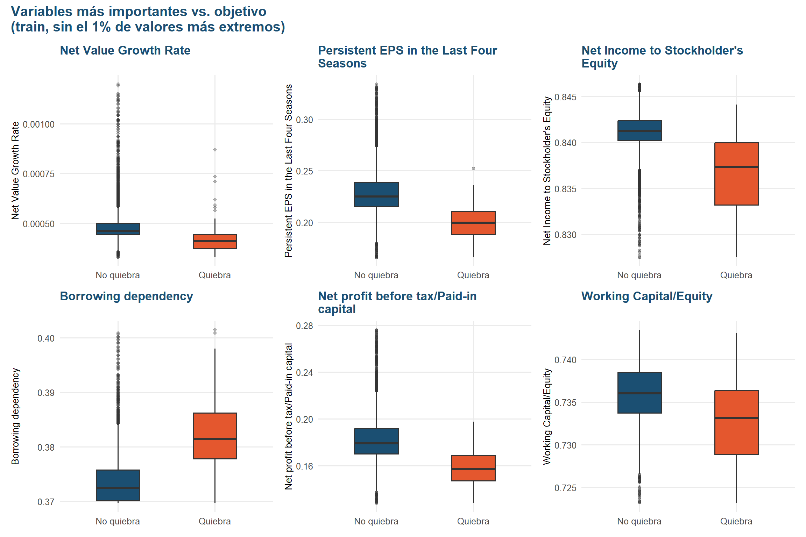
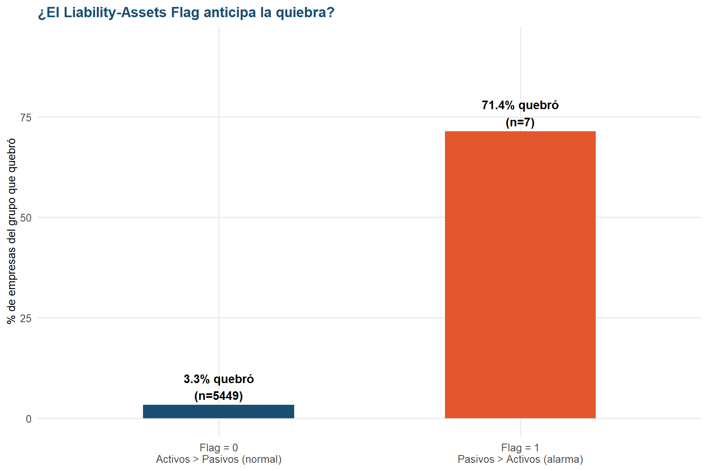
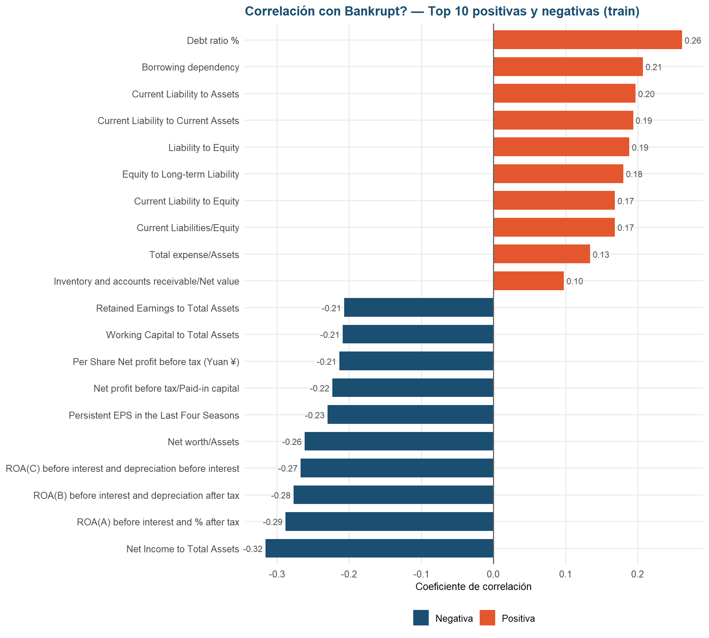
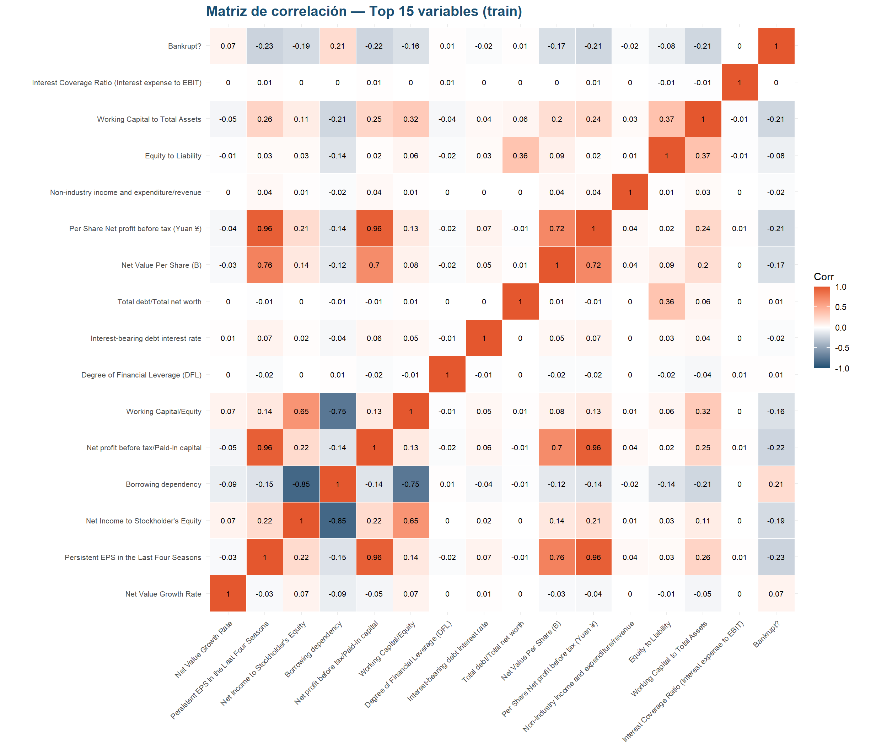

Capítulo 6 Análisis bivariado: variables vs. objetivo (sobre train)
6.1 Variables más importantes según Random Forest
Usamos un Random Forest entrenado únicamente con train para tener una primera
idea de qué variables separan mejor a las empresas que quiebran de las que no. Esto es
solo exploratorio: nos ayuda a elegir qué variables mirar con más detalle en los
gráficos siguientes, no es el modelo final del proyecto.
¿Por qué Random Forest? Se eligió porque no necesita que las variables estén en la misma escala ni sigan una relación lineal con la quiebra, es robusto ante los outliers que ya se identificaron en los datos y entrega una medida de importancia de variables por defecto, facilitando la interpretación para fines exploratorios.
# Nota metodológica: la imputación con la mediana que se hace aquí es temporal y
# solo existe para poder entrenar el Random Forest exploratorio; no se aplica a
# train_df ni al dataset real. La imputación definitiva se decide en la etapa de
# preprocesamiento, después del EDA.
X_rf <- train_df %>% select(-all_of(TARGET), -`Net Income Flag`)
X_rf <- X_rf %>%
mutate(across(everything(), ~ ifelse(is.infinite(.x), NA, .x))) %>%
mutate(across(everything(), ~ ifelse(is.na(.x), median(.x, na.rm = TRUE), .x)))
y_train_factor <- factor(train_df[[TARGET]], levels = c(0, 1),
labels = c("No", "Si"))
set.seed(RANDOM_STATE)
rf <- randomForest(x = X_rf, y = y_train_factor, ntree = 100, importance = TRUE)
# MeanDecreaseGini es el equivalente conceptual a feature_importances_ de sklearn
importancias <- importance(rf, type = 2)[, 1]
importancias <- sort(importancias, decreasing = TRUE)
cat("============================================================\n")## ============================================================## TOP 15 VARIABLES MÁS IMPORTANTES (Random Forest, train)## ============================================================## Net Value Growth Rate Persistent EPS in the Last Four Seasons
## 13.636 10.215
## Net Income to Stockholder's Equity Borrowing dependency
## 10.044 9.609
## Net profit before tax/Paid-in capital Working Capital/Equity
## 8.345 7.247
## Degree of Financial Leverage (DFL) Interest-bearing debt interest rate
## 7.012 7.011
## Total debt/Total net worth Net Value Per Share (B)
## 6.903 6.826
## Per Share Net profit before tax (Yuan ¥) Non-industry income and expenditure/revenue
## 6.398 6.305
## Equity to Liability Working Capital to Total Assets
## 5.830 5.650
## Interest Coverage Ratio (Interest expense to EBIT)
## 5.610top_15_features <- names(head(importancias, 15))
top_6_features <- names(head(importancias, 6))
df_imp <- tibble(variable = names(head(importancias, 15)),
importancia = as.numeric(head(importancias, 15))) %>%
mutate(top6 = variable %in% top_6_features)
ggplot(df_imp, aes(x = reorder(variable, importancia), y = importancia, fill = top6)) +
geom_col() +
geom_text(aes(label = sprintf("%.3f", importancia)), hjust = -0.15, size = 3,
fontface = "bold", color = COLOR_MAIN) +
coord_flip(clip = "off") +
scale_fill_manual(values = c(`TRUE` = COLOR_RISK, `FALSE` = COLOR_MAIN),
labels = c(`TRUE` = "Top 6 (usadas más abajo)",
`FALSE` = "Resto del top 15"),
name = NULL) +
labs(title = "Top 15 variables más importantes\n(Random Forest sobre train)",
x = NULL, y = "Importancia (MeanDecreaseGini)") +
expand_limits(y = max(df_imp$importancia) * 1.2) +
tema_eda +
theme(legend.position = "bottom")
¿Qué hizo Random Forest aquí? Es un modelo que, al entrenarse, mide qué tanto le “ayudó” cada variable para diferenciar empresas que quiebran de las que no. Cuanto mayor el número de importancia, más útil fue esa variable para el modelo. Entre las más importantes suelen aparecer variables de rentabilidad para el accionista (
Net Income to Stockholder's Equity), márgenes operativos y ratios de endeudamiento — lo cual tiene sentido: una empresa que no genera ganancias para sus dueños y está muy endeudada es, intuitivamente, más propensa a quebrar.
Random Forest se utiliza aquí como una herramienta exploratoria, no como un ranking definitivo de importancia. Dos sesgos conocidos a tener en cuenta:
- Favorece variables continuas sobre categóricas: una variable binaria como
Liability-Assets Flagcasi nunca aparecerá entre las “más importantes”, aunque sí sea relevante. - Reparte la importancia entre variables correlacionadas: cuando varias variables miden algo muy parecido (como las distintas versiones de ROA), el modelo divide el “crédito” entre ellas, lo que puede subestimar su relevancia individual.
6.2 Variables más importantes vs. objetivo
plot_box_target <- function(var) {
q1 <- quantile(train_df[[var]], 0.01, na.rm = TRUE)
q99 <- quantile(train_df[[var]], 0.99, na.rm = TRUE)
df_f <- train_df %>% filter(.data[[var]] >= q1, .data[[var]] <= q99)
ggplot(df_f, aes(x = as.factor(.data[[TARGET]]), y = .data[[var]],
fill = as.factor(.data[[TARGET]]))) +
geom_boxplot(width = 0.45, outlier.alpha = 0.35, outlier.size = 1.2) +
scale_x_discrete(labels = TARGET_LABELS) +
scale_fill_manual(values = TARGET_COLORS) +
labs(title = str_wrap(var, 32), x = NULL, y = var) +
tema_eda
}
wrap_plots(lapply(top_6_features, plot_box_target), ncol = 3) +
plot_annotation(
title = "Variables más importantes vs. objetivo\n(train, sin el 1% de valores más extremos)",
theme = theme(plot.title = element_text(face = "bold", size = 15))
)
Estos boxplots comparan la distribución de cada variable entre empresas que quebraron y que no, y muestran patrones distintos según el tipo de variable:
- Variables de rentabilidad (
Net Income to Stockholder's Equity,Persistent EPS in the Last Four Seasons,Net profit before tax/Paid-in capital): en las tres, el grupo que quebró tiene medianas más bajas y cajas más dispersas (sobre todoNet Income to Stockholder's Equity, donde la caja de “Quiebra” es mucho más ancha). Esto confirma que las empresas que quiebran tienden a ser menos rentables, y de forma menos homogénea — hay más variedad de situaciones dentro de ese grupo. Borrowing dependency: suele ser el panel con la separación más clara — el grupo “Quiebra” tiene una mediana notablemente más alta y su caja casi no se superpone con la de “No quiebra”. Confirma, en la práctica, lo que ya muestra la correlación más adelante: mayor dependencia de financiamiento externo se asocia con mayor riesgo de quiebra.Net Value Growth RateeInterest Expense Ratio: aquí la diferencia entre grupos suele ser mínima — las cajas se superponen bastante y las medianas están muy cerca. Son variables que el Random Forest consideró relevantes en conjunto con las demás, pero que por sí solas, vistas de forma aislada, no separan claramente a las empresas que quiebran.
En conjunto, el patrón refuerza lo que se venía viendo en la sección: rentabilidad baja y endeudamiento alto son las señales más visibles de riesgo, mientras que otras variables importantes para el modelo probablemente aportan valor más por su interacción con las demás que por separarse solas en un boxplot.
Nota: dependiendo de la partición train/test que te haya tocado, es posible que
el orden exacto de las 6 variables top varíe un poco respecto a esta descripción —
ajusta los nombres si es necesario.
6.3 Liability-Assets Flag vs. objetivo
Análisis bivariado de la única variable categórica con la variable objetivo.
Liability-Assets Flag: es la única variable categórica del dataset. Es binaria e
indica si los pasivos de la empresa superan a sus activos (1) o no (0).
tabla_pct <- prop.table(table(train_df$`Liability-Assets Flag`, train_df[[TARGET]]),
margin = 1) * 100
tabla_conteo <- table(train_df$`Liability-Assets Flag`, train_df[[TARGET]])
totales <- rowSums(tabla_conteo)
print(round(tabla_pct, 2))##
## 0 1
## 0 96.66 3.34
## 1 28.57 71.43df_flag <- tibble(
flag = rownames(tabla_pct),
pct_quiebra = tabla_pct[, "1"],
n = as.numeric(totales)
) %>%
mutate(etiqueta = ifelse(flag == "0",
"Flag = 0\nActivos > Pasivos (normal)",
"Flag = 1\nPasivos > Activos (alarma)"))
ggplot(df_flag, aes(x = etiqueta, y = pct_quiebra, fill = etiqueta)) +
geom_col(width = 0.5) +
geom_text(aes(label = sprintf("%.1f%% quebró\n(n=%d)", pct_quiebra, n)),
vjust = -0.2, fontface = "bold", size = 3.8) +
scale_fill_manual(values = c(COLOR_MAIN, COLOR_RISK)) +
labs(title = "¿El Liability-Assets Flag anticipa la quiebra?",
x = NULL, y = "% de empresas del grupo que quebró") +
ylim(0, max(df_flag$pct_quiebra) * 1.3) +
tema_eda
Alternativa fiel al gráfico de “waffle” (cuadrícula 10x10) del notebook original: si
quieres reproducirlo exactamente, instala el paquete waffle
(install.packages("waffle")) y usa waffle::waffle() sobre tabla_pct.
El grupo con Flag = 1 (pasivos mayores que activos) suele tener una tasa de quiebra
dramáticamente más alta que el grupo Flag = 0. Es decir, cuando una empresa debe más
de lo que tiene, la probabilidad de que quiebre aumenta muchísimo.
Sin embargo, hay que leer este resultado con cautela: el grupo Flag = 1 tiene muy
pocas empresas en train (revisa el n impreso arriba). Con una muestra tan pequeña,
el porcentaje es muy sensible a cualquier empresa individual y no es estadísticamente
robusto — no podemos concluir con confianza que la relación sea tan fuerte en la
población general, aunque la dirección (más pasivos que activos → más riesgo) sí
tiene sentido financiero.
Por eso, aunque Liability-Assets Flag parece ser una señal de alerta útil, conviene
tratarla con precaución en el modelado: puede aportar información valiosa para ese
pequeño grupo de riesgo, pero su bajo número de casos limita qué tan bien puede
generalizar.
6.4 Correlaciones con la variable objetivo
corr_objetivo <- sapply(train_df[num_vars], function(x) {
cor(x, train_df[[TARGET]], use = "pairwise.complete.obs")
})
corr_objetivo <- sort(corr_objetivo)
cat("======================================================================\n")## ======================================================================## CORRELACIONES CON LA VARIABLE OBJETIVO, Bankrupt? (train)## ======================================================================##
## TOP 10 CORRELACIONES NEGATIVAS (más fuertes):## Net Income to Total Assets ROA(A) before interest and % after tax
## -0.316 -0.288
## ROA(B) before interest and depreciation after tax ROA(C) before interest and depreciation before interest
## -0.277 -0.267
## Net worth/Assets Persistent EPS in the Last Four Seasons
## -0.262 -0.230
## Net profit before tax/Paid-in capital Per Share Net profit before tax (Yuan ¥)
## -0.223 -0.214
## Working Capital to Total Assets Retained Earnings to Total Assets
## -0.209 -0.207##
## TOP 10 CORRELACIONES POSITIVAS (más fuertes):## Inventory and accounts receivable/Net value Total expense/Assets
## 0.098 0.134
## Current Liabilities/Equity Current Liability to Equity
## 0.169 0.169
## Equity to Long-term Liability Liability to Equity
## 0.180 0.188
## Current Liability to Current Assets Current Liability to Assets
## 0.194 0.197
## Borrowing dependency Debt ratio %
## 0.207 0.262top_corr <- c(head(corr_objetivo, 10), tail(corr_objetivo, 10))
df_corr <- tibble(variable = names(top_corr), valor = as.numeric(top_corr)) %>%
mutate(signo = ifelse(valor < 0, "Negativa", "Positiva"))
ggplot(df_corr, aes(x = reorder(variable, valor), y = valor, fill = signo)) +
geom_col(width = 0.7) +
geom_text(aes(label = sprintf("%.2f", valor),
hjust = ifelse(valor >= 0, -0.15, 1.15)),
size = 3, color = "grey30") +
geom_hline(yintercept = 0, color = "grey40") +
coord_flip(clip = "off") +
scale_fill_manual(values = c(Negativa = COLOR_MAIN, Positiva = COLOR_RISK),
name = NULL) +
labs(title = "Correlación con Bankrupt? — Top 10 positivas y negativas (train)",
x = NULL, y = "Coeficiente de correlación") +
tema_eda +
theme(legend.position = "bottom")
En palabras simples: el gráfico confirma, con números, lo que ya insinuaba el Random Forest: rentabilidad y endeudamiento son los dos bloques que más se relacionan con la quiebra, pero en direcciones opuestas.
- Correlaciones negativas (azul): dominadas por variables de rentabilidad — distintas versiones de ROA, utilidad neta sobre activos/patrimonio, ganancias retenidas. La relación es negativa porque tiene sentido financiero: a mayor rentabilidad, menor probabilidad de quiebra.
- Correlaciones positivas (naranja): dominadas por variables de
endeudamiento —
Debt ratio %,Borrowing dependency, varias razones de pasivos sobre activos o patrimonio. Aquí la relación es positiva porque a mayor nivel de deuda relativa, mayor probabilidad de quiebra.
Es importante notar que ninguna correlación individual suele superar ~0.32 en valor absoluto: son relaciones reales pero moderadas, no fuertes. Esto refuerza una conclusión que ya se venía formando en el EDA: ninguna variable por sí sola explica bien la quiebra, por lo que un modelo que combine varias señales (como Random Forest) probablemente capture mejor el patrón que basarse en una sola razón financiera.
También vale la pena notar que varias de las variables con correlación negativa más fuerte (las distintas versiones de ROA) son las mismas que ya se identifican como altamente correlacionadas entre sí en la siguiente sección de multicolinealidad — otra razón para tenerlas presentes al momento de seleccionar variables para el modelo.
6.5 Matriz de correlación de las variables más importantes
corr_features <- c(top_15_features, TARGET)
corr_matrix <- cor(train_df[corr_features], use = "pairwise.complete.obs")
ggcorrplot(
corr_matrix, lab = TRUE, lab_size = 2.8, type = "full",
colors = c(COLOR_MAIN, "white", COLOR_RISK),
outline.color = "white",
title = "Matriz de correlación — Top 15 variables (train)"
) +
theme(
plot.title = element_text(face = "bold", size = 15, color = COLOR_MAIN),
axis.text.x = element_text(angle = 45, hjust = 1, size = 8),
axis.text.y = element_text(size = 8)
)
Esta matriz reúne en un solo lugar las 15 variables más relevantes según Random
Forest, junto con Bankrupt?, para ver cómo se relacionan entre sí (no solo con la
quiebra).
- Última fila/columna (
Bankrupt?): muestra correlaciones moderadas con las demás variables, consistentes con lo visto arriba — ninguna supera ~0.3 en valor absoluto, lo que confirma que ninguna variable por sí sola explica la quiebra con fuerza. - Bloques oscuros entre variables (no con el target): aquí está lo más llamativo. Varias combinaciones de ROA, utilidad neta y ganancias retenidas muestran correlaciones muy altas entre sí (cercanas a 0.9-1.0). Esto confirma la multicolinealidad: son distintas formas de medir prácticamente lo mismo (rentabilidad), calculadas con pequeñas variaciones metodológicas.
Esto no afecta a Random Forest (que ya usamos para identificar estas variables), pero si más adelante se prueba un modelo lineal (como regresión logística), meter varias versiones casi idénticas del mismo ratio no aporta información nueva y puede inflar artificialmente la importancia de esa “familia” de variables o dificultar la interpretación de los coeficientes. Por ahora no se elimina ninguna — esa decisión se deja para la etapa de preprocesamiento, con más contexto sobre qué modelo se va a usar.